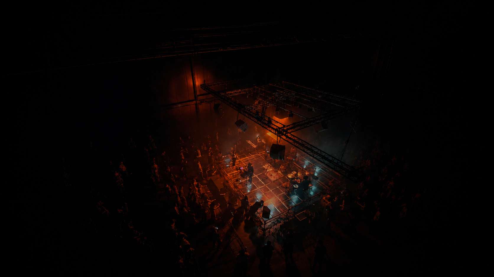

The Artist
Johb Ashar explores the fragile boundaries of existence through soundscapes that are as haunting as they are beautiful. Drawing inspiration from the inevitable and the unknown, every chord is a step deeper into the void.
Welcome to a space where the ethereal meets the earthly — where sound and movement transcend the ordinary, and music exists in the delicate balance between life and death.